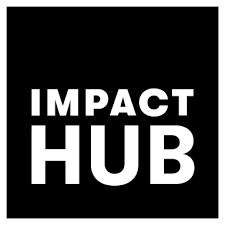
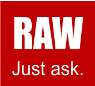
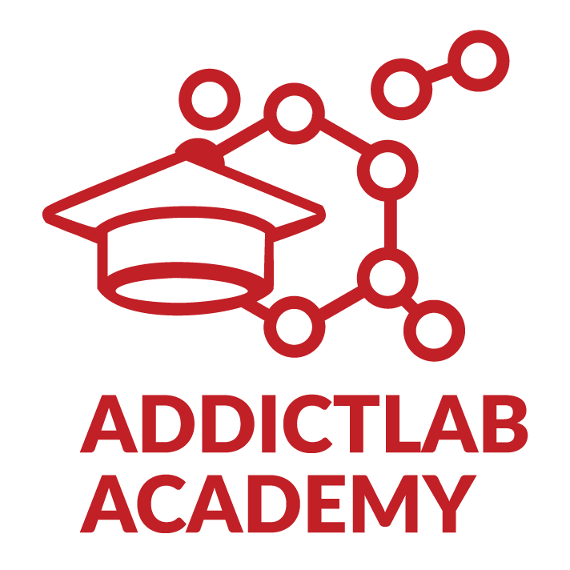
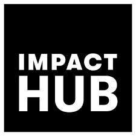
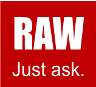
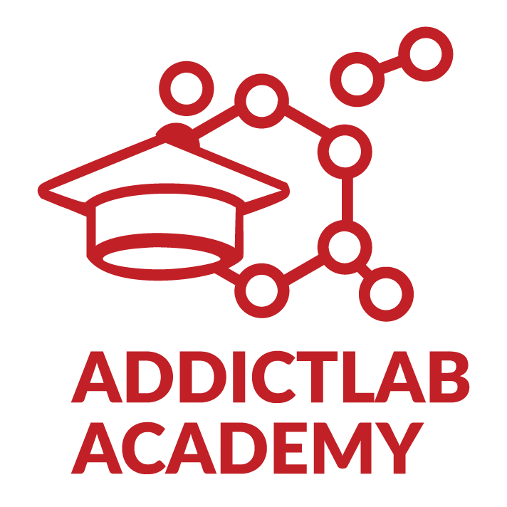
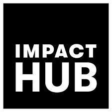
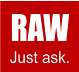
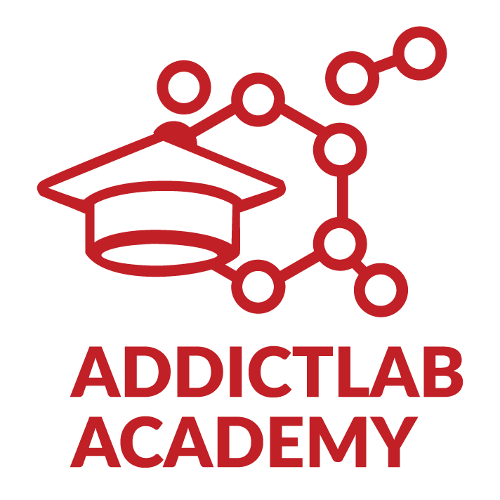

Our Sponsors, Partners & Supporters Unsere Sponsoren, Partner und Unterstützer Nos sponsors, partenaires et soutiens I nostri Finanziatori, Associati e Sostenitori
.png) 





Salento Apuglia Project - in this Impact Lab series, we will be building a platform to support the local olive farmers, whose livelihoods have been devastated by the Xilella Fastidiosa bacteria. There is no treatment for the bacteria and entire olive plantations must be replanted. Since the timeline for olive trees to become productive is approximately 10 years - the economic devastation for the local farmers is enormous, wiping out their main source of income. Projekt Salento Apuglia - in dieser Impact Lab-Reihe werden wir eine Plattform aufbauen, um Unterstützung der lokalen Olivenbauern, deren Lebensgrundlage durch die Bakterien der Gattung Xilella Fastidiosa. Es gibt keine Behandlung für die Bakterien und ganze Oliven Plantagen müssen neu gepflanzt werden. Da der Zeitplan für die Produktivität der Olivenbäume beträgt etwa 10 Jahre - die wirtschaftliche Verwüstung für die lokalen Bauern ist enorm, die ihre Haupteinnahmequelle auslöschen. Projet Salento Apuglia - dans cette série d'Impact Lab, nous allons construire une plate-forme pour soutenir les oléiculteurs locaux, dont les moyens de subsistance ont été dévastés par la La bactérie Xilella Fastidiosa. Il n'existe aucun traitement pour la bactérie et l'olive entière Les plantations doivent être replantées. Comme le calendrier de mise en production des oliviers est d'environ 10 ans - la dévastation économique pour les agriculteurs locaux est énorme, anéantissant ainsi leur principale source de revenus. Progetto Salento Apuglia - in questa serie di Impact Lab costruiremo una piattaforma per sostenere gli olivicoltori locali, i cui mezzi di sussistenza sono stati devastati dalla Batterio Xilella Fastidiosa. Non esiste un trattamento per i batteri e per l'oliva intera Le piantagioni devono essere ripiantate. Dal momento che la linea temporale per gli olivi per diventare produttivi è di circa 10 anni - la devastazione economica per gli agricoltori locali è enorme, cancellando la loro principale fonte di reddito.
Our Impact Project will focus on working with local farmers in the Puglia region to develop and implement a ‘Responsible Holidays’ platform. The platform will allow tourists to identify and book responsible holidays – where tourists can help the local farmers to rebuild their farms, while lodging at the rustic Italian farms and experiencing the charm of southern Italy first hand. Unser Impact-Projekt wird sich auf die Zusammenarbeit mit lokalen Bauern in der Region Apulien konzentrieren, um eine Plattform für "verantwortungsbewusste Ferien" entwickeln und implementieren. Die Plattform wird es Touristen ermöglichen, verantwortungsbewusste Ferien zu identifizieren und zu buchen - wo Touristen den örtlichen Bauern beim Wiederaufbau ihrer Höfe zu helfen, während sie in der rustikalen Italienische Bauernhöfe und erleben Sie den Charme Süditaliens hautnah. Notre projet d'impact se concentrera sur la collaboration avec les agriculteurs locaux de la région des Pouilles pour développer et mettre en œuvre une plate-forme "Vacances responsables". Cette plate-forme permettre aux touristes d'identifier et de réserver des vacances responsables - où les touristes peuvent aider les agriculteurs locaux à reconstruire leurs fermes, tout en logeant au Les fermes italiennes et l'expérience du charme de l'Italie du Sud. Il nostro progetto di impatto si concentrerà sulla collaborazione con gli agricoltori locali della regione Puglia per sviluppare e implementare una piattaforma "Vacanze responsabili". La piattaforma permettere ai turisti di identificare e prenotare vacanze responsabili - dove i turisti possono aiutare i contadini locali a ricostruire le loro fattorie, mentre alloggiano al rustico Fattorie italiane e vivere in prima persona il fascino del Sud Italia.
Salento is the name of a 100 km long and 40 km wide beautiful peninsula in the extreme southeast of Italy, which is often referred to as situated in the “heel” of the Italian “boot”. Salento ist der Name einer 100 km langen und 40 km breiten wunderschönen Halbinsel im äußersten südöstlich von Italien, das oft als im Südosten Italiens gelegen bezeichnet wird. "Ferse" des italienischen "Stiefels". Salento est le nom d'une belle péninsule de 100 km de long et 40 km de large à l'extrême sud-est de l'Italie, qui est souvent considérée comme située dans la "talon" de la "botte" italienne. Il Salento è il nome di una bellissima penisola lunga 100 km e larga 40 km all'estremo sud-est dell'Italia, che è spesso indicato come situato nel "tacco" dello "stivale" italiano.
The region relies heavily on two sources of income:
Tourism - Clear blue Meditarreneant water and stunning coast, often referred as the
Maldives of Italy, the rich baroque architecture in contrast to the rural “trulli”
white houses that recall Greece, and the good genuine food based on vegetable and
fresh fish.
Die Region ist in hohem Maße von zwei Einkommensquellen abhängig:
Tourismus - Klares, blaues, mediterranes Wasser und eine atemberaubende Küste, oft als
Malediven in Italien, die reiche Barockarchitektur im Kontrast zu den ländlichen "Trulli"
weiße Häuser, die an Griechenland erinnern, und die guten, echten Lebensmittel auf der Basis von Gemüse und
frischer Fisch.
La région dépend fortement de deux sources de revenus :
Tourisme - Eau bleue claire de la Méditerranée et côte étonnante, souvent appelée
Maldives d'Italie, la riche architecture baroque en contraste avec les "trulli" ruraux
maisons blanches qui rappellent la Grèce, et la bonne nourriture authentique à base de légumes et
du poisson frais.
La regione dipende fortemente da due fonti di reddito:
Turismo - Acque cristalline del Mediterraneo e splendide coste, spesso indicate come il
Maldive d'Italia, la ricca architettura barocca in contrasto con i trulli rurali
case bianche che ricordano la Grecia, e il buon cibo genuino a base di verdure e di
pesce fresco.
Olive Oil Production - The geographic situation and climate support an extensive production of olive oil from ancestral olive trees spread all over the territory. Olivenölproduktion - Die geographische Lage und das Klima unterstützen eine umfangreiche die Produktion von Olivenöl aus den Olivenbäumen der Vorfahren, die über das ganze Gebiet verteilt sind. Production d'huile d'olive - La situation géographique et le climat favorisent une la production d'huile d'olive à partir d'oliviers ancestraux répartis sur tout le territoire. Produzione di olio d'oliva - La situazione geografica e il clima supportano un'ampia produzione di olio d'oliva da olivi ancestrali sparsi su tutto il territorio.
Today, Salento is badly affected by several problems and poverty is concerning more and more people. Heute ist das Salento von mehreren Problemen schwer betroffen, und die Armut betrifft immer mehr Menschen. Aujourd'hui, le Salento est très touché par plusieurs problèmes et la pauvreté concerne de plus en plus les gens. Oggi il Salento è fortemente colpito da diversi problemi e la povertà riguarda sempre di più persone.
'The first withered olive trees appeared near Gallipoli, in the Apulia region of southern Italy. Bunches of leaves turned brown and crunchy around the edges. Then, whole groves started to wane. Farmers whose families had tended olives for generations watched their trees dry up and their businesses plummet. Die ersten verdorrten Olivenbäume erschienen in der Nähe von Gallipoli, in der Region Apulien Süditalien. Die Blätter sind braun gefärbt und an den Rändern knusprig. Dann begannen ganze Haine zu schwinden. Landwirte, deren Familien Oliven angebaut hatten seit Generationen sahen sie zu, wie ihre Bäume austrockneten und ihre Geschäfte einbrachen. Les premiers oliviers fanés sont apparus près de Gallipoli, dans la région des Pouilles. le sud de l'Italie. Les grappes de feuilles sont devenues brunes et croquantes sur les bords. Puis, des bosquets entiers ont commencé à s'affaiblir. Les agriculteurs dont les familles avaient cultivé des olives pendant des générations ont vu leurs arbres s'assécher et leurs entreprises s'effondrer. I primi olivi appassiti sono appassiti nei pressi di Gallipoli, nella regione pugliese di Italia meridionale. I grappoli di foglie sono diventati marroni e croccanti ai bordi. Poi, i boschetti interi hanno cominciato a calare. I contadini le cui famiglie avevano curato le olive per generazioni hanno visto i loro alberi seccare e i loro affari crollare.
At first, it wasn’t clear what was causing the decline. Was it a fungus? A virus? Something else entirely? Scientists showed up in the olive groves to sample the trees, urgently trying to find the cause. Zunächst war nicht klar, was die Ursache für den Rückgang war. War es ein Pilz? Ein Virus? Etwas ganz anderes? Wissenschaftler tauchten in den Olivenhainen auf, um Proben von den Bäumen zu nehmen, dringend versuchen, die Ursache zu finden. Au début, on ne savait pas très bien ce qui causait ce déclin. S'agissait-il d'un champignon ? Un virus ? Quelque chose d'entièrement différent ? Les scientifiques se sont présentés dans les oliveraies pour échantillonner les arbres, Il est urgent d'en trouver la cause. All'inizio non era chiaro quale fosse la causa del declino. Era un fungo? Un virus? Qualcosa di completamente diverso? Gli scienziati si sono presentati negli uliveti per campionare gli alberi, cercando urgentemente di trovare la causa.
One researcher from a local agricultural institute had just come back from a conference in California, where he’d learned about the plant bacterium Xylella fastidiosa. The symptoms the olive growers were seeing, he realized, looked exactly like what seen in the talks he'd attended. Sure enough, when he and his colleagues tested the Italian trees, they found the bacterium lurking in their woody hearts. Ein Forscher eines örtlichen Agrarinstituts war gerade von einer Konferenz in Kalifornien, wo er von dem Pflanzenbakterium Xylella fastidiosa erfahren hatte. Er erkannte, dass die Symptome, die die Olivenbauern sahen, genau so aussahen wie was in den Gesprächen, an denen er teilgenommen hatte, zu sehen war. Sicherlich, wenn er und seine Kollegen die italienischen Bäume testeten, fanden sie das Bakterium in ihren holzigen Herzen lauernd. Un chercheur d'un institut agricole local venait de rentrer d'une conférence à Californie, où il avait appris l'existence de la bactérie végétale Xylella fastidiosa. Les symptômes que les oléiculteurs observaient, a-t-il réalisé, ressemblaient exactement ce qu'il a vu dans les conférences auxquelles il a assisté. Il est certain que lorsque lui et ses collègues ont testé les arbres italiens, ils ont trouvé la bactérie tapie dans leur cœur boisé. Un ricercatore di un istituto agricolo locale era appena tornato da una conferenza a California, dove aveva conosciuto il batterio Xylella fastidiosa. I sintomi che i coltivatori di olive stavano vedendo, si rese conto, assomigliavano esattamente a quello che ha visto nei colloqui a cui ha partecipato. Certo, quando lui e i suoi colleghi testato gli alberi italiani, hanno trovato il batterio in agguato nei loro cuori legnosi.
This was not good news. The European Commission considers Xylella to be among the most dangerous plant bacteria in the world. Different strains of it have wreaked havoc on vineyards in California and citrus trees in Brazil, killing acres of valuable plants and causing billions in lost revenue. Das waren keine guten Nachrichten. Die Europäische Kommission ist der Ansicht, dass Xylella zu den gefährliche Pflanzenbakterien in der Welt. Verschiedene Stämme davon haben Verwüstung von Weinbergen in Kalifornien und Zitrusfrüchten Bäume in Brasilien, tötete Hektar mit wertvollen Pflanzen und verursachte Einnahmeverluste in Milliardenhöhe. Ce n'est pas une bonne nouvelle. La Commission européenne considère que Xylella est l'une des bactéries végétales dangereuses dans le monde. Différentes souches de cette bactérie ont fait leur apparition les ravages sur les vignobles de Californie et les agrumes des arbres au Brésil, tuant des hectares de plantes précieuses et causant des milliards de pertes de revenus. Non era una buona notizia. La Commissione europea ritiene che Xylella sia tra i più pericolosi batteri vegetali nel mondo. Diversi ceppi di esso hanno scatenato il caos dei vigneti in California e degli agrumi alberi in Brasile, uccidendo acri di piante preziose e causando miliardi in perdite di reddito.
Until the olive trees fell ill, Xylella had never been seen in Europe, and its identification in Italy set off alarm bells across the scientific and political communities of the European Union. Italian olive growers produce 15 percent of the world’s virgin olive oil, worth more than $2 billion each year. Spain produces even more. Anything that threatened the trees threatened the entire European economy. Bis die Olivenbäume krank wurden, hatte man Xylella in Europa noch nie gesehen, und ihre Identifizierung in Italien die Alarmglocken in der wissenschaftlichen und politischen Gemeinschaft von der Europäischen Union. Italienische Olivenbauern produzieren 15 Prozent der weltweiten natives Olivenöl im Wert von mehr als 2 Milliarden Dollar pro Jahr. Spanien produziert sogar noch mehr. Alles, was die Bäume bedrohte, bedrohte die gesamte europäische Wirtschaft. Jusqu'à ce que les oliviers tombent malades, Xylella n'avait jamais été vu en Europe, et son identification en Italie ont déclenché l'alarme dans les communautés scientifiques et politiques de l'Union européenne. Les oléiculteurs italiens produisent 15 % de la production mondiale d l'huile d'olive vierge, qui représente plus de 2 milliards de dollars par an. L'Espagne en produit encore plus. Tout ce qui menaçait les arbres menaçait l'ensemble de l'économie européenne. Fino a quando gli olivi non si ammalarono, Xylella non era mai stata vista in Europa, e la sua identificazione in Italia ha fatto scattare campanelli d'allarme in tutta la comunità scientifica e politica di l'Unione Europea. Gli olivicoltori italiani producono il 15 per cento della produzione mondiale di olio d'oliva vergine, del valore di oltre 2 miliardi di dollari all'anno. La Spagna ne produce ancora di più. Tutto ciò che minacciava gli alberi minacciava l'intera economia europea.
Olives are also central to the identity of the region. Over 60 million trees stand in stately rows across Puglia, which—until recently—produced about 40 percent of all the olive oil Italy exports. Nearly half a million trees are the beloved “ulivi secolari,” centuries-old trees whose gnarled trunks have stood firm even as vast changes swept across the region. Der Olivenanbau ist auch für die Identität der Region von zentraler Bedeutung. Über 60 Millionen Bäume stehen in stattlichen Reihen in ganz Apulien, die bis vor kurzem etwa 40 Prozent der das gesamte Olivenöl, das Italien exportiert. Fast eine halbe Million Bäume sind die geliebten "ulivi secolari", jahrhundertealte Bäume, deren knorrige Stämme auch als fegten gewaltige Veränderungen über die Region hinweg. Les olives sont également au cœur de l'identité de la région. Plus de 60 millions d'arbres se trouvent dans des Pouilles, qui - jusqu'à récemment - ont produit environ 40 % des toute l'huile d'olive que l'Italie exporte. Près d'un demi-million d'arbres sont les bien-aimés "ulivi secolari", des arbres centenaires dont le tronc noueux a résisté à la De vastes changements ont balayé la région. Anche le olive sono fondamentali per l'identità della regione. Oltre 60 milioni di alberi maestose file in tutta la Puglia, che fino a poco tempo fa hanno prodotto circa il 40 per cento delle tutto l'olio d'oliva che l'Italia esporta. Quasi mezzo milione di alberi sono l'amato "ulivi secolari", alberi secolari i cui tronchi nodosi sono rimasti fermi anche quando vasti cambiamenti hanno travolto la regione.
On the farms, the news was bleak - the farmers watched helplessly as their trees weakened. By 2018, they’d lost more than 65 percent of their trees. It is estimated that by 2020 the region will have lost nearly 90 percent. On average it takes between 10 and 20 years to grow a productive olive tree. Scientists estimate that it will take 50 years to restore the groves.’ Unfortunately, there is no effective treatment - which means that tens of millions of trees must be uprooted, burnt and replanted. Auf den Farmen waren die Nachrichten düster - die Bauern sahen hilflos zu, wie ihre Bäume schwächer wurden. Bis 2018 hatten sie mehr als 65 Prozent ihrer Bäume verloren. Es wird geschätzt, dass bis 2020 die Region fast 90 Prozent verloren haben wird. Im Durchschnitt dauert es zwischen 10 und 20 Jahre, um einen produktiven Olivenbaum zu züchten. Wissenschaftler schätzen, dass es 50 Jahre dauern wird, um die Olivenhaine wiederherzustellen". Leider, es keine wirksame Behandlung gibt - was bedeutet, dass Dutzende von Millionen von Bäume müssen entwurzelt, verbrannt und neu gepflanzt werden. Dans les fermes, les nouvelles étaient sombres - les fermiers regardaient, impuissants, leurs arbres s'affaiblir. En 2018, ils avaient perdu plus de 65 % de leurs arbres. On estime que d'ici 2020, le La région aura perdu près de 90 %. En moyenne, il faut entre 10 et 20 ans pour cultiver un olivier productif. Les scientifiques estiment qu'il faudra 50 ans pour restaurer les bosquets". Malheureusement, il n'existe pas de traitement efficace - ce qui signifie que des dizaines de millions de Les arbres doivent être déracinés, brûlés et replantés. Nelle fattorie, le notizie erano desolanti - i contadini guardavano impotenti mentre i loro alberi si indebolivano. Nel 2018, avevano perso più del 65% dei loro alberi. Si stima che entro il 2020 il regione avrà perso quasi il 90 per cento. In media ci vuole tra 10 e 20 anni per coltivare un olivo produttivo. Gli scienziati stimano che ci vorranno 50 anni per ripristinare gli oliveti". Purtroppo, non esiste un trattamento efficace - il che significa che decine di milioni di gli alberi devono essere sradicati, bruciati e ripiantati.
A sliver of hope comes from the agricultural institutions, who have started testing hundreds of cultivars of olives to find ones that might be resistant to the bacteria. So far, they’ve found at least two very promising possible options. Ein Hoffnungsschimmer kommt von den landwirtschaftlichen Institutionen, die mit den Tests begonnen haben Hunderte von Olivensorten, um diejenigen zu finden, die gegen die Bakterien resistent sein könnten. Bislang haben sie mindestens zwei sehr vielversprechende mögliche Optionen gefunden. Une lueur d'espoir vient des institutions agricoles, qui ont commencé à tester des centaines de cultivars d'olives pour trouver ceux qui pourraient être résistants à la bactérie. Jusqu'à présent, ils ont trouvé au moins deux options très prometteuses. Un briciolo di speranza viene dalle istituzioni agricole, che hanno iniziato a testare centinaia di cultivar di olive per trovare quelle che potrebbero essere resistenti ai batteri. Finora, hanno trovato almeno due possibili opzioni molto promettenti.
Read the full article @ National Geographic Den ganzen Artikel lesen @ National Geographic Lire l'article complet @ National Geographic Leggi l'articolo completo @ National GeographicGirls Can Code strives to build a digital platform to aid the farmers in re-planting olive groves, as well as establishing an interim source of income - while the trees mature into productive groves. Girls Can Code strebt den Aufbau einer digitalen Plattform an, um die Bauern bei der Wiederbepflanzung zu unterstützen Olivenhaine, sowie die Schaffung einer vorläufigen Einkommensquelle - während die Bäume zu produktiven Hainen heranreifen. Girls Can Code s'efforce de créer une plateforme numérique pour aider les agriculteurs à replanter des oliveraies, ainsi que la mise en place d'une source de revenus provisoire - pendant que les arbres mûrissent pour devenir des bosquets productifs. Girls Can Code si sforza di costruire una piattaforma digitale per aiutare gli agricoltori nel reimpianto oliveti, oltre a stabilire una fonte di reddito provvisoria - mentre gli alberi maturano in boschetti produttivi.
As part of our Impact Project - Girls Can Code will focus on working with local farmers in the Puglia region to develop and implement a ‘Responsible Holidays’ platform. The platform will allow tourists to identify and book responsible holidays – where tourists can help the local farmers to rebuild their farms, while lodging at the rustic Italian farms and experiencing the charm of southern Italy first hand. Als Teil unseres Impact-Projekts - Girls Can Code wird sich auf die Zusammenarbeit mit lokalen Bauern in den Die Region Apulien soll eine Plattform für "verantwortungsbewusste Ferien" entwickeln und umsetzen. Die Plattform wird es Touristen ermöglichen, verantwortungsbewusste Ferien zu identifizieren und zu buchen - wo Touristen den örtlichen Bauern beim Wiederaufbau ihrer Farmen helfen können, während sie in die rustikalen italienischen Bauernhöfe und erleben Sie den Charme Süditaliens hautnah. Dans le cadre de notre projet Impact - Girls Can Code, nous nous concentrerons sur la collaboration avec les agriculteurs locaux dans les La région des Pouilles va développer et mettre en œuvre une plateforme de "vacances responsables". Cette plateforme permettra aux touristes d'identifier et de réserver des vacances responsables - où les touristes peuvent aider les agriculteurs locaux à reconstruire leurs fermes, tout en logeant à les fermes italiennes rustiques et de découvrir le charme du sud de l'Italie. Come parte del nostro progetto di impatto - Girls Can Code si concentrerà sul lavoro con gli agricoltori locali nel Regione Puglia per sviluppare e implementare una piattaforma di "Vacanze responsabili". La piattaforma permetterà ai turisti di identificare e prenotare vacanze responsabili - dove i turisti possono aiutare i contadini locali a ricostruire le loro fattorie, mentre alloggiano a le fattorie rustiche italiane e vivere in prima persona il fascino del Sud Italia.
Knowledge is Power - Run information campaigns with Italian and Swiss media to draw attention to the agricultural crisis which is devastating European Olive Oil production. Wissen ist Macht - Führen Sie Informationskampagnen mit italienischen und schweizerischen Medien durch, um Aufmerksamkeit zu erregen auf die Agrarkrise, die die europäische Olivenölproduktion verwüstet. La connaissance, c'est le pouvoir - Mener des campagnes d'information avec les médias italiens et suisses pour attirer l'attention à la crise agricole qui dévaste la production européenne d'huile d'olive. La conoscenza è potere - Organizzare campagne di informazione con i media italiani e svizzeri per attirare l'attenzione alla crisi agricola che sta devastando la produzione europea di olio d'oliva.
Responsible Holidays - Provide a means to promote and book responsible holidays where farmers can host families or corporate organisations wishing to support their rebuilding efforts. Verantwortungsvolle Feiertage - Bieten Sie ein Mittel zur Förderung und Buchung verantwortungsvoller Feiertage, bei denen Landwirte können Gastfamilien oder Firmenorganisationen aufnehmen, die ihre Wiederaufbaubemühungen unterstützen möchten. Vacances responsables - Fournir un moyen de promouvoir et de réserver des vacances responsables où les agriculteurs peut accueillir des familles ou des organisations d'entreprises souhaitant soutenir leurs efforts de reconstruction. Vacanze responsabili - Fornire un mezzo per promuovere e prenotare vacanze responsabili dove gli agricoltori possono ospitare famiglie o organizzazioni aziendali che desiderano sostenere i loro sforzi di ricostruzione.
Ongoing Local Support - Organize local initiatives for girls of all ages to get familiar with technologies to support and manage the booking platform, as well as build e-shop to sell local products online. Laufende Unterstützung vor Ort - Organisieren Sie lokale Initiativen, mit denen Mädchen aller Altersgruppen vertraut gemacht werden Technologien zur Unterstützung und Verwaltung der Buchungsplattform sowie zum Aufbau eines E-Shops für den Verkauf lokale Produkte online. Soutien local permanent - Organiser des initiatives locales pour que les filles de tous âges puissent se familiariser avec technologies pour soutenir et gérer la plate-forme de réservation, ainsi que pour créer une boutique en ligne pour vendre des produits locaux en ligne. Sostegno locale in corso - Organizzare iniziative locali per ragazze di tutte le età per familiarizzare con tecnologie per supportare e gestire la piattaforma di prenotazione, oltre a costruire e-shop da vendere prodotti locali online.
New Ideas Welcome - Promote initiatives to identifies winning ideas that can help the local economy (technology innovation) Neue Ideen willkommen - Fördern Sie Initiativen zur Identifizierung von Gewinnerideen, die den lokalen Wirtschaft (technologische Innovation) Accueil des nouvelles idées - Promouvoir des initiatives pour identifier les idées gagnantes qui peuvent aider les l'économie (innovation technologique) Nuove idee benvenute - Promuovere iniziative per identificare le idee vincenti che possono aiutare il locale economia (innovazione tecnologica)


